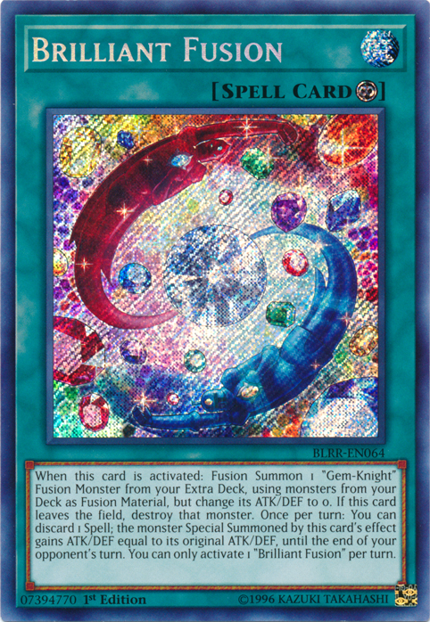
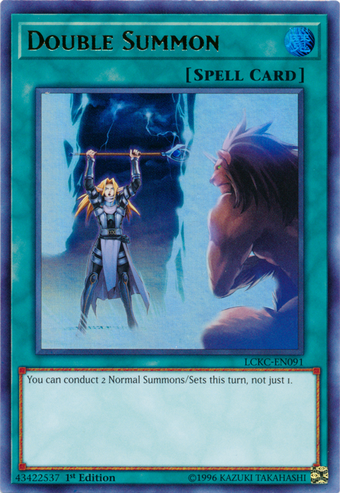

One of the most important thing in making a deck is to find what cards would be consistant in your deck. you are going to want to find what cards would help your deck further either its power or combo and/or plays. example: If your deck is highly normal summon reliant,like Madolche, you are going to want to play cards like Brilliant Fusion (to summon Gem-Knight Seraphinite) or Double Summon.
 